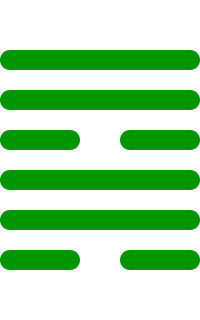

第五十七卦
巽卦

卦辞
小亨，利有攸往，利见大人。
巽卦象征顺从、谦逊与柔顺。卦辞意为：小亨通，利于有所前往，利于见大人。巽卦教导我们要保持谦逊和顺从的美德。
彖传
重巽以申命，刚巽乎中正而志行。柔皆顺乎刚，是以小亨，利有攸往，利见大人。
彖传说：重巽以申命，刚巽乎中正而志行。柔皆顺乎刚，是以小亨，利有攸往，利见大人。
象传
随风，巽。君子以申命行事。
象传说：随风，就是巽卦。君子应当效法这种精神，申命行事。随风而行，象征顺从的力量。
爻辞
初六：进退，利武人之贞
进退，利于武人坚守正道。
初六爻位于最下方，进退。进退，利武人之贞，表示武人之道。
九二：巽在床下，用史巫纷若，吉无咎
巽在床下，用史巫纷若，吉祥无灾害。
九二爻得中，巽在床下。巽在床下，用史巫纷若，吉无咎，表示史巫之吉。
九三：频巽，吝
频巽，困难。
九三爻位置不当，频巽。频巽，吝，表示频繁巽顺之难。
六四：悔亡，田获三品
悔恨消亡，田获三品。
六四爻接近君位，悔亡。悔亡，田获三品，表示收获之喜。
九五：贞吉悔亡，无不利。无初有终，先庚三日，后庚三日，吉
坚守正道吉祥悔恨消亡，无所不利。无初有终，先庚三日，后庚三日，吉祥。
九五爻居中尊位，贞吉。贞吉悔亡，无不利。无初有终，先庚三日，后庚三日，吉，表示终吉。
上九：巽在床下，丧其资斧，贞凶
巽在床下，丧其资斧，坚守正道凶险。
上九爻位于极点，巽在床下。巽在床下，丧其资斧，贞凶，表示巽顺之极。